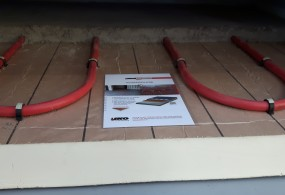

Vloerisolatie IKO Enertherm
IKO enertherm wordt gebruikt voor het thermisch isoleren van vloeren.
Door de fijne celstructuur worden er met een lagere densiteit toch betere mechanische eigenschappen behaald dan met grover schuim. Hierdoor zijn de isolatieplaten vormvast en blijft het isolatievermogen behouden gedurende jaren. IKO enertherm is met zijn ± 32 kg/m³ een lichtgewicht isolatie. Dit levert niet alleen ergonomische voordelen in de manipulatie maar ook minder transportkosten door een beperkter volume. IKO enertherm isolatie haalt een brandklasse B klasse-s2, d0 (end-use). De plaat heeft een zeer lage rookontwikkeling,smelt en druppelt niet. De brandvertragende eigenschappen zijn eigen aan de chemische structuur. IKO enertherm heeft een zeer lage wateropname en is rot- en schimmelvrij. Hierdoor blijft de isolatiewaarde in alle omstandigheden behouden. Belangrijke kenmerken| Toepassing | Bovenzijde vloer, hout of beton |
| Materiaal | Polyisocyanuraatschuim (PIR) |
| Doe-het-zelf | Niet zelf te doen |
| Subsidie mogelijk | Ja, ISDE bij R-waarde 3,5, klik hier |
| lambda (U)-waarde | 0,022 W/m2K |
Buitengewoon vorm- en drukvast.
Met raster als referentie voor vloerverwarming.
Vochtongevoelig en rotvrij.
Zeer licht en vooral handig formaat.
Zeer makkelijk te verwerken.
Snelle plaatsing met tand-en groefverbinding.
Vergelijken
Dak
Platdakisolatie IKO EnerthermGeluid
Binnenwandsysteem HV70 Van FaayEco-Baffles Van VRK
Geluidisolatie Isolgomma Van Imbema
Gevel
BuitenisolatiegevelHoutvezelisolatie Van Gutex
Isolatie Isovlas PL Plaat
Spouwisolatie HR++ Neopixels EPS Parels
Glas
Glasfolie van HomechillHR++ Isolatieglas
Renovatieglas en Kozijnen
Vloer
Bodem afsluiting KalkkorrelsReflectiefolie Tonzon